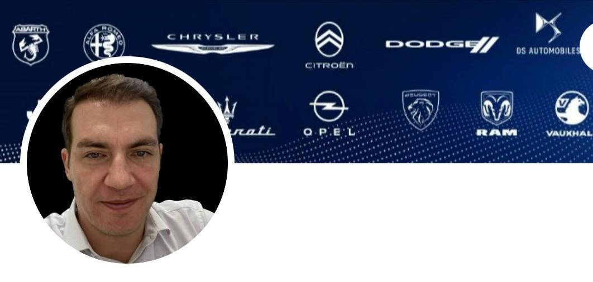

Formação e Experiências

Engenheiro com experiência em montadora automotiva, concessionárias automotivas, indústria metalúrgica e agrícola. Atualmente, atuo na multinacional Stellantis na área de processos de pós-vendas, oferecendo suporte às concessionárias das marcas Fiat, Jeep, RAM, Peugeot e Citroën em diversos estados do Brasil. Minhas principais responsabilidades englobam a gestão de pós-vendas, incluindo processos de assistência técnica, diagnóstico complexo, suporte ao atendimento ao cliente, gerenciamento de garantias e outros pilares para garantir a satisfação do cliente.
Antes de ingressar na indústria automotiva, acumulei experiência na indústria metalúrgica e agrícola, atuando na área de Engenharia e Qualidade como fornecedor de componentes para diversas marcas como AGCO, Valtra, CNH e motores MWM.
Possuo formação em Engenharia de Produção e atualmente estou complementando minha trajetória acadêmica com graduação em Engenharia de Software. Com isso, busco novos conhecimentos e complemento da experiência adquirida, além de novos desafios no mercado de trabalho.
Experiência:
Stellantis South America
Tempo integral · 1 a 11 m
Porto Alegre, Rio Grande do Sul, Brasil · Híbrida
Analista Pós-Vendas Stellantis PEUGEOT e CITROEN
abr de 2023 - o momento · 1 ano 3 meses
Atuação nas concessionárias PEUGEOT e CITROEN nos Estados de São Paulo, Paraná, Santa Catarina e Rio Grande do Sul, desempenhando as atividades: •Análise dos processos de pós-vendas das concessionárias PEUGEOT e CITROEN; •Suporte aos processos de assistência técnica e diagnósticos; •Suporte aos processos de Garantia; •Acompanhamento dos processos de Campanha e Recall junto à rede de concessionários •Prestar suporte técnico no processo do Customer Care
Analista Pós-Vendas Stellantis FIAT, JEEP e RAM
ago de 2022 - abr de 2023 · 9 meses
Atuação nas concessionárias FIAT, JEEP e RAM nos Estados de Santa Catarina e Rio Grande do Sul, desempenhando as atividades: • Análise dos processos de pós-vendas das concessionárias FIAT, JEEP e RAM; •Suporte aos processos de assistência técnica e diagnósticos; •Suporte aos processos de Garantia; •Acompanhamento dos processos de Campanha e Recall junto à rede de concessionários; •Prestar suporte técnico no processo do Customer Care
Analista Técnico Pleno – FIAT JEEP RAM
Fiat Chrysler Automobiles (FCA) · Tempo integral
nov de 2014 - ago de 2022 · 7 anos 10 meses
Porto Alegre e Região, Brasil · Híbrida
Atuação nas concessionárias dos Estados de Santa Catarina e Rio Grande do Sul, atuando nas Marcas FIAT, JEEP, RAM desempenhando as atividades: •Dar suporte aos técnicos das concessionárias nos casos de diagnóstico complexo. •Prestar suporte técnico no processo do Customer Care. •Visitar a rede de Concessionárias de acordo com agenda de prioridades (criticidades Fermo Auto, Repeated Repair, etc.); e suportar a aprovação de reparos com análise in loco. •Relatar através de documento específico a situação da concessionária (Gestão de Oficina) para as áreas internas da FCA para tomada de decisão e ação sobre o tema; • Analisar os processos de Pós-Vendas preconizados pelo WCD Processos de Serviços; •Acompanhamento dos processos de Campanha e Recall junto à rede de concessionários (Completion); •Participar em fóruns e reuniões com áreas internas da fábrica (CSI Customer Table, Casos Críticos, Atendimento) para reportar a situação da rede de concessionárias e produto
Acesse meu linkdin para o currículo completo:
Currículo Renan Menegassi Martel